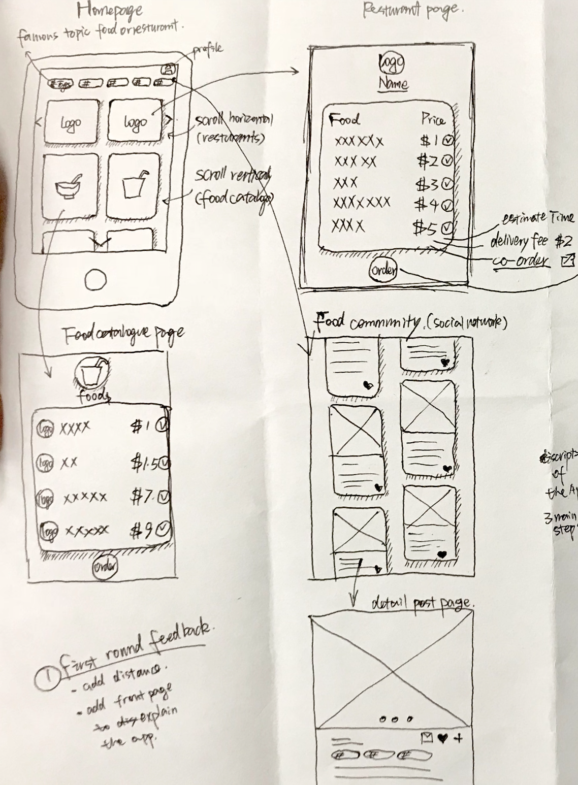
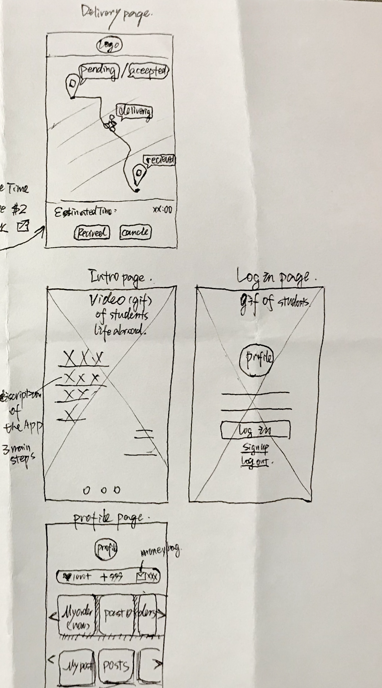

Prototype
Prototype 1
The first prototype include homepage, restuarant page, food community and food catalog pages. The visual style is card style for each section.
Peer suggestions: For the food delivery app, users need to know the distance, and discription page for the app.

Prototype 2
The second version, I made the delivery page and profile pages. Peer suggestions is that the homepage with two catalogs makes them feel confused, becuase users hate duplicated and complex logic to use the app. Thus, I plan to delete the food catalog and just leave the restuarant one. In addition, peer also mentions that review would be a vital infos for the food delivery app to increase the trust.
